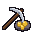

ProjectMiner(가칭)
· 웹 체험판
광차나 탑을 눌러 정산 · ◆ 판을 누르면 곡괭이질
PC 판은 이 그림처럼
실제 바탕화면
위에 떠 있어요
할 일.txt — 메모장
─ ☐ ✕
오늘 할 일
- 주간 보고서 마무리
- 회의록 정리 (14:00)
- 메일 답장 3통
← 일하는 동안 굴 띠에서 광부가 판다.
흘끗 봤을 때 탑이 솟아 있으면 눌러 깬다.
불러오는 중…
▦
